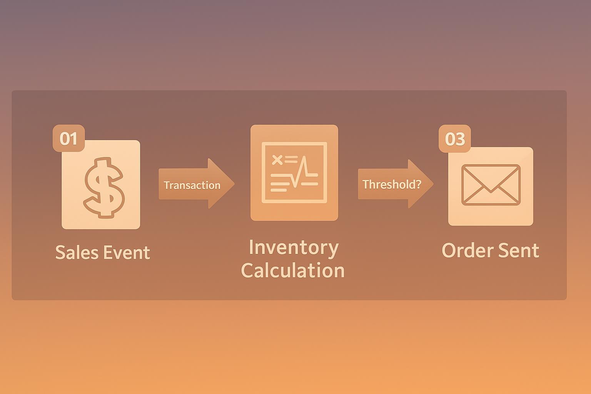

Automated Purchase Ordering System
This proof-of-concept was created for a Sales Engineering course and simulates a smart automated purchasing system tailored for retail clients. The system identifies low inventory levels, triggers reorder recommendations, and connects to suppliers — improving decision-making at the point of sale.
Key Features:
- Inventory threshold detection using SQL-based logic
- Python scripts for simulating order generation
- Tableau dashboard displaying SKU-level insights
- Workflow designed with stakeholder buy-in and technical pre-sales principles
Stack:
Python, SQL, Tableau, Git, PostgreSQL